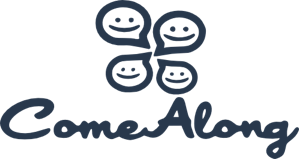

Hire me!
I’m looking for new job opportunities in the web and/or mobile area. I’m very well willing to travel, learn, and work in team as well as develop in remote working.
Portfolio
Here are some projects I’ve designed, developed and proud of
Sgàget An android app to survey the urban mobility
How do people move in the city of Modena? How much? Which type of transportation system do they prefer and how much does this affect the pollution, viability and wellness of the citizes? “Sgàget!” (“come on, hurry up!” in the local dialect) was born in order to answer these questions and give this no-profit organization the chance of gathering data very easily for a great survey about mobility. The data gathered will be presented to the municipality of Modena in order to actively participate to the future choices of the new “structural plan” of the city.
I personally designed and developed every aspect of the app (including the logo and the look and feel). In particular I developed an “intelligent” tracking algorithm that permits to avoid the use of the GPS and I bear in mind the retrocompatibility (API > 10).
ComeAlong A platform that encourages social cultural activities

- Year
- 2014
- Status
- dev in progress
- Customer
- Unitn
ComeAlong is a platform built on top of social networks that powers experience sharing and exploits its dissemination through networks to support social marketing and social media campaigns.
I’ve designed and developed two web front ends of a social platform that aims to encourage the attendance to cultural events. The platform exploits new means of communication and new marketing techniques studied by the department of Information Engineering and Computer Science of the University of Trento.

MWAAT The Mobile Web Accessibility Tool

- Year
- 2012
- Status
- active
- Customer
- Univ. of Lisbon
- Download
- sourceforge
MobileWaaT provides accessibility evaluation of mobile web applications by applying the Mobile Web Best Practices (Mobile Web Initiative) as well as the WCAG2.0 guidelines (WAI Initative) into mobile-simulated environments (e.g., iPhone, Android, etc..).
I’ve designed and developed both software and ontologies for the European project “Accessible”. Here I show the last tool realized during this experience.